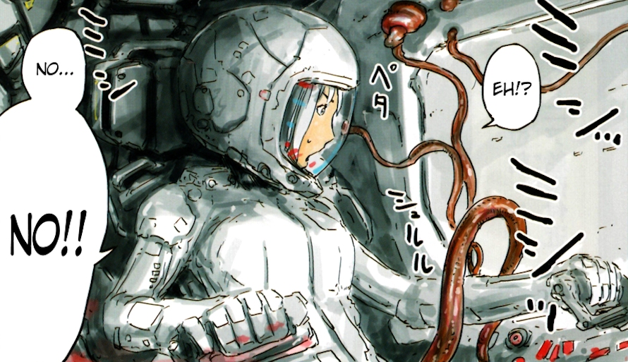
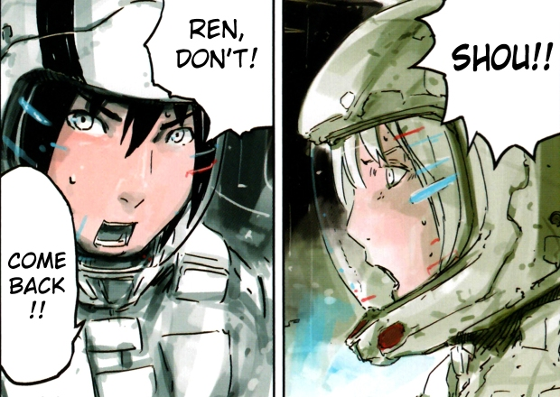

Knights of Sidonia (Sidonia no Kishi) is a space opera with a story set in a distant future, taking place almost entirely aboard the huge generation spaceship Sidonia. After the Earth was attacked by gigantic shape-shifting alien organisms called Gauna and almost completely destroyed, the remnants of humanity build from the remains of the planet a multitude of massive generation spaceships and leave the Earth in search of a new home. One of these ships is Sidonia, that, as the fates of the other ships are unknown, is arguably the last remaining human sanctuary in the vast darkness of space.
As Sidonia was built in Japan, and was initially populated by the Japanese, its population too has retained the culture closely resembling that of the former Japan. Of course, as nearly one thousand years passed since the humans abandoned the mortally wounded Earth, there are some major differences: The two sexes are no longer a limitation and Sidonia’s population of over 500,000 souls is now comprised equally of men, women, hermaphrodites and asexuals who reproduce by means of cloning. And, as the spaceship is a self-sustained environment with limited resources, all Sidonians end up at the end of their lives in an 'organic converter' to be turned into fertiliser. Human engineering, such as human photosynthesis is also commonplace, causing some frictions in the society, as the people who cannot photosynthesise are looked down upon by those who can, and their 'peculiar habit' of sustaining their lives by inserting food into their mouths is considered inferior and filthy.
The Sidonians try to go about their lives as best they can, but their daily routines are regularly interrupted by sporadic re-appearances and attacks of their nemesis - Gauna.
Little is known about the nature of Gauna or their motivation to attack humankind. Negotiation is also not possible, as Sidonians have yet to succeed in establishing any kind of meaningful communication with these mysterious alien creatures. The only option humanity is left with when confronted by Gauna is to fight back. Each Gauna has its core protected by a huge mass of an almost impregnable material known as the 'placenta'. Once, and only when, all the placenta is shed away, the core is exposed and vulnerable to human attack. After the Gauna's core is damaged beyond repair, the whole Gauna's body simply disintegrates.
Sidonia is protected by large mechanised weapons called Guardians - basically highly advanced space-faring exoskeletons, and, as Gauna’s attacks are fairly frequent, most members of the surviving human population are drafted as a pilot of a Guardian at a young age, if they are shown to be capable of piloting one. Guardians are Sidonia’s first and last line of defence.
The story of Knights of Sidonia follows the exploits of Nagate Tanikaze, who lived in the underground layer of Sidonia (in what amounts to Sidonia’s slums) since his birth, raised by his elderly grandfather. Never having met anyone else, and having nothing else to do, Nagate spends his days in an old Guardian simulator, eventually becoming an expert pilot. After his grandfather's death, he emerges, first time in his life, to the surface and, after his talent is quickly recognised, is selected as a Guardian pilot. Finally, Nagate’s childhood dream comes true: He is now a Guardian pilot, defending Sidonia from Gauna's attacks, using the combat expertise he learned in the simulator, and making new friends (and also some enemies) in the process.
The manga, which is written and illustrated by Tsutomu Nihei, debuted in 2009 and is now into its 12th volume. Each volume contains 5 issues (or chapters, as Nihei calls them) so the series is now running into its fairly impressive 60th issue. Unfortunately, the pressure of having to deliver a new issue every few weeks seems to start showing.
The illustrations in the latest issues seem to be hastily drawn, with many details left out, giving an impression of mere shadows of the beautifully detailed drawings from the first issues. The storyline of Knights of Sidonia was never exactly for brainy readers, but even so, Nihei seems to start

running out of ideas - after all there is only so many ways you can blast Gauna by a super-sized Higgs Particle Cannon. With the second season of the television series under production, there is still a hope that this manga will see brighter days. For now though, you will be safer to stick with the vastly superior anime adaptation of this mecha space opera.